Http协议和Servlet
一、http协议
什么是协议
双方在交互通讯的时候，遵循的一种规范，规则。
http协议
针对网络上的客户端与服务器端在执行请求的时候，遵循的一种规范，也就是规定了客户端在访问服务器端的时候，要带上那些东西，服务器端返回数据是，也要带上什么东西。
版本
1.0
- 请求数据服务器返回后会断开连接
1.1
请求数据时，服务器返回后，连接还会保持着。除非服务器 | 客户端关掉。有一定的时间限制
如果都空着这个连接会断开链接。
演示客户端如何与服务器端通讯。
在地址中键入网址如”www.baidu.com"，回车，或是平时注册的时候，点击了注册按钮浏览器都能显示一些东西，那么背地里到底浏览器和服务器是如何通讯的，到底传送了哪些数据。
打开tomcat，输入localhost:8080 打开首页
在首页上找到Example字样
选择servlet例子 —> Request Parameters
如下图：
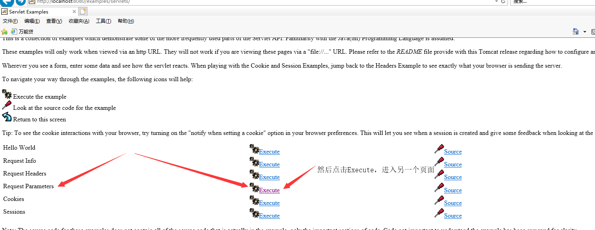
进入如下界面
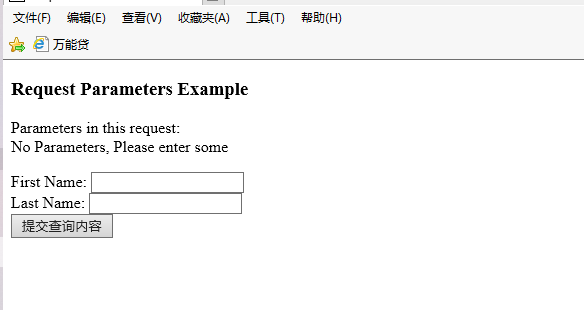
执行tomcat例子
在chrome中打开开发者工具
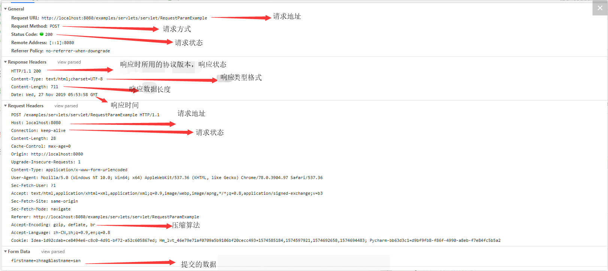
http请求的状态码
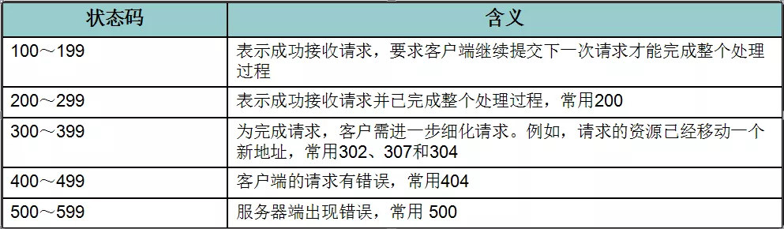
get和post方法的区别
一般来说，当我们点击超链接，通过地址栏访问都是get请求方式。通过表单提交的数据一般是post方式。
可以简单理解GET方式用来查询数据,POST方式用来提交数据，get的提交速度比post快
GET方式：在URL地址后附带的参数是有限制的，其数据容量通常不能超过1K。
POST方式：可以在请求的实体内容中向服务器发送数据，传送的数据量无限制。
二、Servlet介绍
什么是Servlet？
其实就是一个Java程序，运行在我们的web服务器上，用于接收和响应和响应客户端的Http请求
更多的是配合动态资源来做。当然静态资源也需要使用到Servlet，只不过Tomcat中已经定义好了一个 DefaultServlet。
作用： Servlet带给我们最大的作用就是能够处理浏览器带来HTTP请求，并返回一个响应给浏览器，从而实现浏览器和服务器的交互。
Hello Servlet
- 首先创建一个web项目，然后配置Tomcat。
如果用idea的话，项目结构大致为。
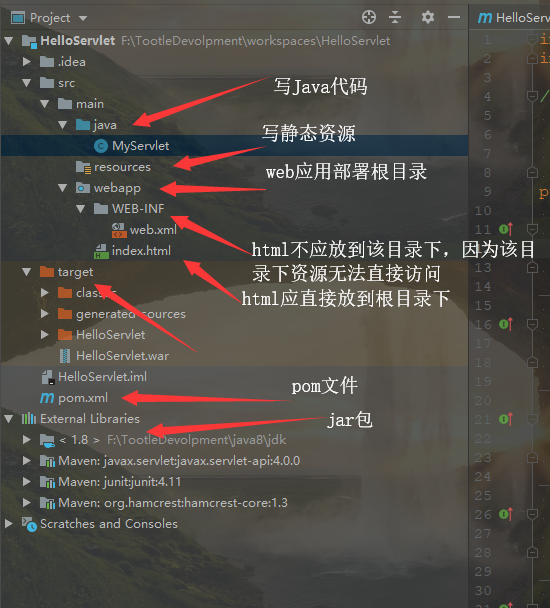
测试运行web工程
我们点击运行时，在浏览器输入 localhost:8080 如果出现下图，就是成功了
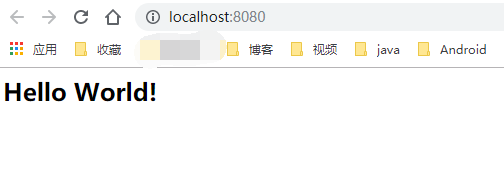
写一个类，实现Servlet接口
public class MyServlet implements Servlet { @Override public void init(ServletConfig servletConfig) throws ServletException { System.out.println("我被初始化了!!!"); } @Override public ServletConfig getServletConfig() { return null; } @Override public void service(ServletRequest servletRequest, ServletResponse servletResponse) throws ServletException, IOException { System.out.println("我被访问了！！！！"); } @Override public String getServletInfo() { return null; } @Override public void destroy() { System.out.println("我被销毁了！！！！"); } }配置Servlet，告诉服务器我们的应用有这些Servlet，在web.xml中配置
<!DOCTYPE web-app PUBLIC "-//Sun Microsystems, Inc.//DTD Web Application 2.3//EN" "http://java.sun.com/dtd/web-app_2_3.dtd" > <web-app> <display-name>Archetype Created Web Application</display-name> <!--向Tomcat报告，我们这个项目有Servlet名字叫做MyServlet，具体的路径是com.YaGe.MyServlet.MyServlet--> <servlet> <servlet-name>MyServlet</servlet-name> <servlet-class>com.yage.myservlet.MyServlet</servlet-class> </servlet> <!--注册Servlet映射，servletName : 找到上面具体的servlet，url-pattern ：在地址栏中的path--> <!--例如：我们像访问当前的servlet，也就是MyServlet，我们就需要在地址栏中键入http://localhost:8080/a--> <!--具体的路径，还需要看你自己的路径，但是a是你访问指定servlet的路径--> <!--注意：url-pattern是需要加"/"，如果不加，则会在项目启动时报错--> <servlet-mapping> <servlet-name>MyServlet</servlet-name> <url-pattern>/a</url-pattern> </servlet-mapping> </web-app>servlet执行过程
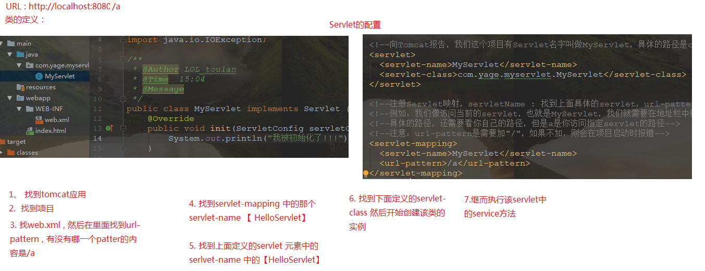
Servlet的通用写法
因为Servlet是一个接口，而且我们通过API发现，Servlet的直接子类实现为GenericServlet和HttpServlet，而当我们进入查看GenericServlet实现类是发现，HttpServlet也是 GenericServlet 的子类实现，所以我们重新写一个类继承HttpServlet，这样我们就可以重写HttpServlet 里面的方法了。但是我们重用的是重写doget()和dopost()方法。
继承并重写doget()和dopost()方法的代码如下
public class MyServlet02 extends HttpServlet { @Override protected void doGet(HttpServletRequest req, HttpServletResponse resp) throws ServletException, IOException { System.out.println("get----"); } @Override protected void doPost(HttpServletRequest req, HttpServletResponse resp) throws ServletException, IOException { System.out.println("post---"); } }web.xml
<!DOCTYPE web-app PUBLIC "-//Sun Microsystems, Inc.//DTD Web Application 2.3//EN" "http://java.sun.com/dtd/web-app_2_3.dtd" > <web-app> <display-name>Archetype Created Web Application</display-name> <!--MyServlet02的servlet配置文件--> <servlet> <servlet-name>MyServlet02</servlet-name> <servlet-class>com.yage.myservlet.MyServlet02</servlet-class> </servlet> <servlet-mapping> <servlet-name>MyServlet02</servlet-name> <url-pattern>/MyServlet02</url-pattern> </servlet-mapping> </web-app>在postman中分别使用get请求和post请求，控制台输出以下内容：

Servlet的生命周期
代码如下:
public class MyServlet implements Servlet { @Override public void init(ServletConfig servletConfig) throws ServletException { System.out.println("我被初始化了!!!"); } @Override public ServletConfig getServletConfig() { return null; } @Override public void service(ServletRequest servletRequest, ServletResponse servletResponse) throws ServletException, IOException { System.out.println("我被访问了！！！！"); } @Override public String getServletInfo() { return null; } @Override public void destroy() { System.out.println("我被销毁了！！！！"); } }web.xml
<!DOCTYPE web-app PUBLIC "-//Sun Microsystems, Inc.//DTD Web Application 2.3//EN" "http://java.sun.com/dtd/web-app_2_3.dtd" > <web-app> <display-name>Archetype Created Web Application</display-name> <!--向Tomcat报告，我们这个项目有Servlet名字叫做MyServlet，具体的路径是com.YaGe.MyServlet.MyServlet--> <servlet> <servlet-name>MyServlet</servlet-name> <servlet-class>com.yage.myservlet.MyServlet</servlet-class> </servlet> <!--注册Servlet映射，servletName : 找到上面具体的servlet，url-pattern ：在地址栏中的path--> <!--例如：我们像访问当前的servlet，也就是MyServlet，我们就需要在地址栏中键入http://localhost:8080/a--> <!--具体的路径，还需要看你自己的路径，但是a是你访问指定servlet的路径--> <!--注意：url-pattern是需要加"/"，如果不加，则会在项目启动时报错--> <servlet-mapping> <servlet-name>MyServlet</servlet-name> <!-- 一般这里写的都是根目录，但是这里为了方便演示，更换到了其他路径 --> <url-pattern>/a</url-pattern> </servlet-mapping> </web-app>演示如下
当我们第一次访问网站： localhost:8080/a的时候我们会发现控制台上打印出

当我们第二次访问该地址的时候，控制台上打印出
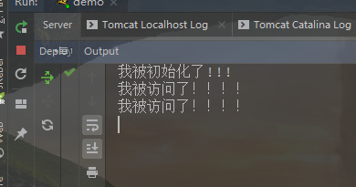
当我们关闭服务的时候，控制台上打印出
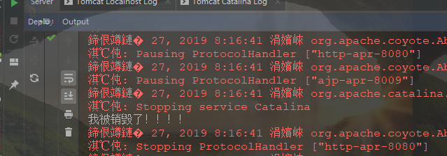
这时我们发现，Servlet生命周期其实可以划分为五个阶段
- 加载Servlet。当Tomcat第一次访问Servlet的时候，Tomcat会负责创建Servlet的实例，默认情况下，初次访问该Servlet才会创建实例
- 初始化。当Servlet被实例化后，Tomcat会调用init()方法初始化这个对象，实例化对象
- 处理服务。当浏览器访问Servlet的时候，Servlet 会调用service()方法处理请求，每访问一次，调用一次Service。
- 销毁。当Tomcat关闭时或者检测到Servlet要从Tomcat删除的时候会自动调用destroy()方法，让该实例释放掉所占的资源。一个Servlet如果长时间不被使用的话，也会被Tomcat自动销毁
- 卸载。当Servlet调用完destroy()方法后，等待垃圾回收。如果有需要再次使用这个Servlet，会重新调用init()方法进行初始化操作。
- 简单总结：只要访问Servlet，service()就会被调用。init()只有第一次访问Servlet的时候才会被调用。 destroy()只有在Tomcat关闭的时候才会被调用。
值得注意的是，如果我们一旦初始化完成，就不会再执行，即init方法只会执行一次
Servlet初始化提前
有时候我们需要将一些加载时间长，加载慢的资源让它提前初始化，这时我们就用到了一个配置标签，
<load-on-startup></load-on-startup>，给定的数字越小，启动的时机越早，一般不写负数，从2开始即可。当我们把
<load-on-startup></load-on-startup>设置为2时，我们发现初始化的实际提前了，因为，之前初始化，都是第一次调用Servlet时才会初始化，而这次，我们发现，还没有访问Servlet时就已经初始化了。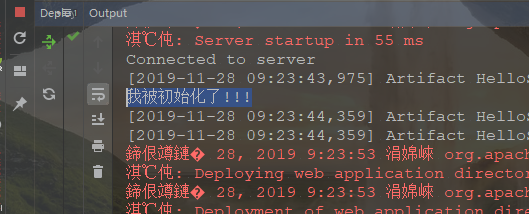
三、ServletConfig
Servlet配置，通过这个对象，可以获取Servlet在配置时的一些信息
获取到Servlet中Servlet-name的文本内容
public class MyServletConfig extends HttpServlet { @Override protected void doGet(HttpServletRequest req, HttpServletResponse resp) throws ServletException, IOException { //调用父类doget方法 //super.doGet(req, resp); //ServletConfig 可以获取Servlet在配置时的一些信息 //得到Servlet配置对象 ServletConfig config = getServletConfig(); //获取到的是配置Servlet里面servlet-name的文本内容 String servletName = config.getServletName(); System.out.println("servletName : "+servletName); } @Override protected void doPost(HttpServletRequest req, HttpServletResponse resp) throws ServletException, IOException { //调用父类dopost方法 //super.doPost(req, resp); } }web.xml
<!DOCTYPE web-app PUBLIC "-//Sun Microsystems, Inc.//DTD Web Application 2.3//EN" "http://java.sun.com/dtd/web-app_2_3.dtd" > <web-app> <display-name>Archetype Created Web Application</display-name> <servlet> <servlet-name>aa</servlet-name> <servlet-class>com.yage.myservlet.MyServletConfig</servlet-class> </servlet> <servlet-mapping> <servlet-name>aa</servlet-name> <url-pattern>/MyServletConfig</url-pattern> </servlet-mapping> </web-app>当我们在浏览器地址栏中输入 localhost:8080/MyServletConfig 时，在控制台中打印出
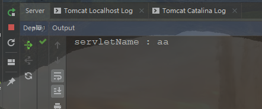
当我们将Servlet中的Servlet-name改为“MyServletConfig”时，按照上面操作步骤，控制台打印出
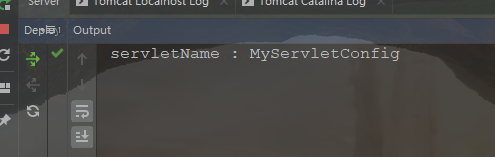
获取某一个具体的的参数值
public class MyServletConfig extends HttpServlet { @Override protected void doGet(HttpServletRequest req, HttpServletResponse resp) throws ServletException, IOException { //父类doget方法 //super.doGet(req, resp); //ServletConfig 可以获取Servlet在配置时的一些信息 //得到Servlet配置对象 ServletConfig config = getServletConfig(); //在写这个参数之前，我们应该在web.xml中提添加 init-param String study = config.getInitParameter("study"); System.out.println("study : "+study); } @Override protected void doPost(HttpServletRequest req, HttpServletResponse resp) throws ServletException, IOException { //父类dopost方法 //super.doPost(req, resp); } }web.xml
<!DOCTYPE web-app PUBLIC "-//Sun Microsystems, Inc.//DTD Web Application 2.3//EN" "http://java.sun.com/dtd/web-app_2_3.dtd" > <web-app> <servlet> <servlet-name>MyServletConfig</servlet-name> <servlet-class>com.yage.myservlet.MyServletConfig</servlet-class> <init-param> <param-name>study</param-name> <param-value>Java</param-value> </init-param> </servlet> <servlet-mapping> <servlet-name>MyServletConfig</servlet-name> <url-pattern>/MyServletConfig</url-pattern> </servlet-mapping> </web-app>当我们在浏览器地址栏中输入 localhost:8080/MyServletConfig 时，在控制台中打印出
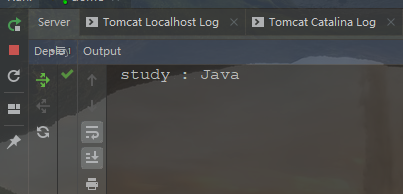
用迭代方法获取initParameter中的ParameterName
public class MyServletConfig extends HttpServlet { @Override protected void doGet(HttpServletRequest req, HttpServletResponse resp) throws ServletException, IOException { //父类doget方法 //super.doGet(req, resp); //ServletConfig 可以获取Servlet在配置时的一些信息 //得到Servlet配置对象 ServletConfig config = getServletConfig(); //获取全部name //Enumeration一个迭代器方法 Enumeration<String> names = config.getInitParameterNames(); while (names.hasMoreElements()) { String name = names.nextElement(); System.out.println("name : "+name); } } @Override protected void doPost(HttpServletRequest req, HttpServletResponse resp) throws ServletException, IOException { //父类dopost方法 //super.doPost(req, resp); } }web.xml
<!DOCTYPE web-app PUBLIC "-//Sun Microsystems, Inc.//DTD Web Application 2.3//EN" "http://java.sun.com/dtd/web-app_2_3.dtd" > <web-app> <servlet> <servlet-name>MyServletConfig</servlet-name> <servlet-class>com.yage.myservlet.MyServletConfig</servlet-class> <init-param> <param-name>study</param-name> <param-value>Java</param-value> </init-param> <init-param> <param-name>education</param-name> <param-value>Undergraduate</param-value> </init-param> <init-param> <param-name>age</param-name> <param-value>21</param-value> </init-param> </servlet> <servlet-mapping> <servlet-name>MyServletConfig</servlet-name> <url-pattern>/MyServletConfig</url-pattern> </servlet-mapping> </web-app>当我们在浏览器地址栏中输入 localhost:8080/MyServletConfig 时，在控制台中打印出
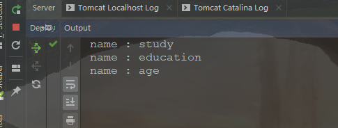
用迭代方法获取initParameter中的ParameterName、value
public class MyServletConfig extends HttpServlet { @Override protected void doGet(HttpServletRequest req, HttpServletResponse resp) throws ServletException, IOException { //父类doget方法 //super.doGet(req, resp); //ServletConfig 可以获取Servlet在配置时的一些信息 //得到Servlet配置对象 ServletConfig config = getServletConfig(); //获取到的是配置Servlet里面servlet-name的文本内容 /*String servletName = config.getServletName(); System.out.println("servletName : "+servletName);*/ //在写这个参数之前，我们应该在web.xml中提添加 init-param /*String study = config.getInitParameter("study"); System.out.println("study : " + study);*/ Enumeration<String> names = config.getInitParameterNames(); while (names.hasMoreElements()) { String name = names.nextElement(); String value = config.getInitParameter(name); System.out.println("name : "+name+" \t value : "+value); } } @Override protected void doPost(HttpServletRequest req, HttpServletResponse resp) throws ServletException, IOException { //父类dopost方法 //super.doPost(req, resp); } }web.xml
<!DOCTYPE web-app PUBLIC "-//Sun Microsystems, Inc.//DTD Web Application 2.3//EN" "http://java.sun.com/dtd/web-app_2_3.dtd" > <web-app> <servlet> <servlet-name>MyServletConfig</servlet-name> <servlet-class>com.yage.myservlet.MyServletConfig</servlet-class> <init-param> <param-name>study</param-name> <param-value>Java</param-value> </init-param> <init-param> <param-name>education</param-name> <param-value>Undergraduate</param-value> </init-param> <init-param> <param-name>age</param-name> <param-value>21</param-value> </init-param> </servlet> <servlet-mapping> <servlet-name>MyServletConfig</servlet-name> <url-pattern>/MyServletConfig</url-pattern> </servlet-mapping> </web-app>当我们在浏览器地址栏中输入 localhost:8080/MyServletConfig 时，在控制台中打印出
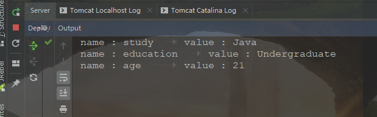
ServletConfig的作用
在将来我们开发一些应用，使用到了一些技术，或者一些代码我们不会写，但是别人写出来了，他的代码放在自己的servlet中，刚好这个servlet里面需要一个数字或者叫做变量值，但是这个不能是固定的，所以要求使用到这个servlet的公司在注册servlet的时候，必须要在web.xml中声明init-params。
四、HttpServlet详解
HttpServlet方法
HttpServlet是抽象类，不能实例化，也就是不能new一个对象
doget()、dopost方法详解
我们知道，get请求走doget方法，post方法，走dopost方法，但为什么呢？
我们在浏览器输入网址，按道理我们首先应该走的是service()方法，但为什么又走到doget()、dopost方法？
当我们查看源码的时候，我们发现HttpServlet中实现了Service方法，源码如下：
public void service(ServletRequest req, ServletResponse res) throws ServletException, IOException{ HttpServletRequest request; HttpServletResponse response; if (!(req instanceof HttpServletRequest && res instanceof HttpServletResponse)) { throw new ServletException("non-HTTP request or response"); } request = (HttpServletRequest) req; response = (HttpServletResponse) res; service(request, response); } protected void service(HttpServletRequest req, HttpServletResponse resp) throws ServletException, IOException{ //现获取到请求方法是什么类型 String method = req.getMethod(); //如果获取到的方法和get相同，那就走get if (method.equals(METHOD_GET)) { long lastModified = getLastModified(req); if (lastModified == -1) { // servlet doesn't support if-modified-since, no reason // to go through further expensive logic doGet(req, resp); } else { long ifModifiedSince = req.getDateHeader(HEADER_IFMODSINCE); if (ifModifiedSince < lastModified) { // If the servlet mod time is later, call doGet() // Round down to the nearest second for a proper compare // A ifModifiedSince of -1 will always be less maybeSetLastModified(resp, lastModified); doGet(req, resp); } else { resp.setStatus(HttpServletResponse.SC_NOT_MODIFIED); } } } else if (method.equals(METHOD_HEAD)) { long lastModified = getLastModified(req); maybeSetLastModified(resp, lastModified); doHead(req, resp); } //方法和post相同， else if (method.equals(METHOD_POST)) { doPost(req, resp); } else if (method.equals(METHOD_PUT)) { doPut(req, resp); } else if (method.equals(METHOD_DELETE)) { doDelete(req, resp); } else if (method.equals(METHOD_OPTIONS)) { doOptions(req,resp); } else if (method.equals(METHOD_TRACE)) { doTrace(req,resp); } else { // // Note that this means NO servlet supports whatever // method was requested, anywhere on this server. // String errMsg = lStrings.getString("http.method_not_implemented"); Object[] errArgs = new Object[1]; errArgs[0] = method; errMsg = MessageFormat.format(errMsg, errArgs); resp.sendError(HttpServletResponse.SC_NOT_IMPLEMENTED, errMsg); } }所以我们发现，我们的请求在走service方法的时候，会通过判断来走doget或者是dopst或者是其他。
总结
http协议：
- 了解请求和响应数据的内容
- 请求行，请求头，请求体，响应行，响应头，响应体
- 了解get和post的区别
Servlet :
会使用简单的servlet
写一个类，实现servlet
配置servlet
会访问Servlet
servlet的生命周期
init 初始化，只会执行一次 让初始化提前 load-on-startup
service 访问，多次，一次请求对应一次service
destory 销毁，一次
ServletConfig
获取Servlet配置信息，params.
HttpServlet:
HttpServlet是抽象类，不能实例化，也就是不能new一个对象，如下图
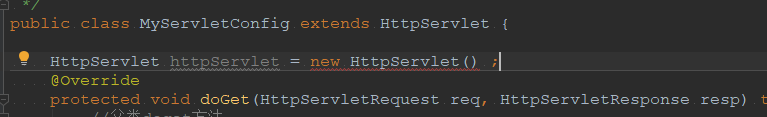
注意：抽象类里面不一定有抽象方法，但有抽象方法的类一定是抽象类，HttpServlet就是一个抽象方法，但是里面没有抽象方法。